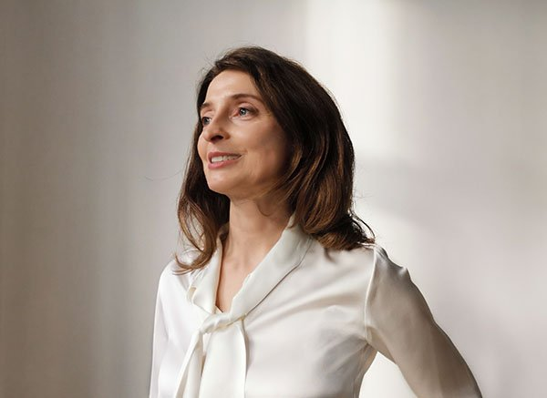

ARCHITEKCI KP / 01Do uzupełnieniaMiejsce na zdjęcie realizacji
Architekci KP — pracownia architektoniczna
Architektura zaczyna się od Ciebie.
My nadajemy jej kształt.
01 / O pracowni
Architektura,
która zaczyna się
od człowieka.
Każda przestrzeń ma swoją historię. My nadajemy jej przemyślaną formę, dopasowaną do potrzeb i możliwości.
Jesteśmy pracownią architektoniczną założoną w 2005 roku w Katowicach. Nasz zespół, prowadzony przez Aleksandrę Grundszok-Dudę, tworzy indywidualne projekty domów, budynków wielorodzinnych, obiektów publicznych oraz wnętrz.
Pracujemy również z istniejącą architekturą — projektujemy przebudowy, rozbudowy i modernizacje, także kamienic oraz obiektów zabytkowych. Łączymy doświadczenie projektowe z wiedzą specjalistów wielu branż.
Towarzyszymy inwestorom od pierwszych decyzji związanych z nieruchomością, przez koncepcję i uzgodnienia, aż po etap realizacji. W centrum każdego projektu pozostają ludzie, którzy będą z tej przestrzeni korzystać.
2005 rok założenia pracowniKatowice
Polska
Polska

02 / Nasze realizacje
Przestrzenie,
które opowiadają.
Domy, miejsca pracy, wnętrza i budynki z nowym życiem. Każdy projekt to inny kontekst, potrzeba i odpowiedź.
ARCHITEKCI KP / 02Do uzupełnieniaMiejsce na zdjęcie realizacji
ARCHITEKCI KP / 03Do uzupełnieniaMiejsce na zdjęcie realizacji
ARCHITEKCI KP / 04Do uzupełnieniaMiejsce na zdjęcie realizacji
ARCHITEKCI KP / 05Do uzupełnieniaMiejsce na zdjęcie realizacji
01 / 05Przesuń, aby odkrywać
03 / Czym się zajmujemy
Zakres pracowni.
Od pierwszej analizy po kompletny projekt. Dopasowujemy rozwiązania do miejsca, funkcji i potrzeb inwestora.
Domy
Projekty indywidualnych domów jednorodzinnych i budynków mieszkalnych, tworzone z myślą o codziennym życiu.
Przebudowy
Modernizacje, rozbudowy i nowe funkcje istniejących budynków. Wydobywamy potencjał zastanej architektury.
Kamienice
Przemyślane przekształcenia kamienic i obiektów historycznych, z poszanowaniem ich charakteru.
Analiza chłonności terenu
Ocena możliwości zagospodarowania działki i jej potencjału inwestycyjnego przed rozpoczęciem projektowania.
Usługi
Architektura obiektów komercyjnych, biur, lokali i przestrzeni użyteczności publicznej.
Wnętrza
Funkcjonalne wnętrza mieszkalne i komercyjne, spójne z architekturą i indywidualnymi potrzebami.
Porozmawiajmy o Twojej inwestycji